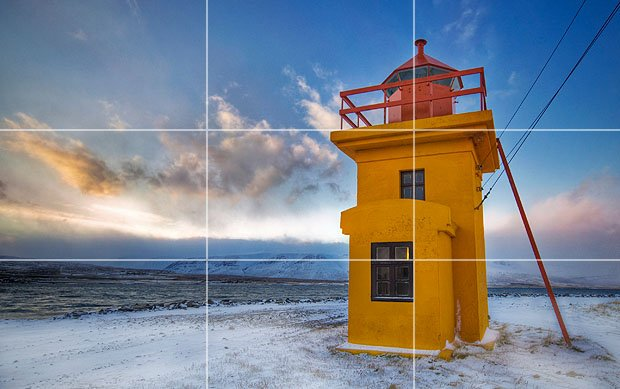

Bố cục là một trong những yếu tố quan trọng để tạo nên bức ảnh đẹp, có chiều sâu. Quy tắc về bố cục được đặt ra giúp chúng ta định hình chính xác đối tượng, sắp xếp và bố trí các yếu tố khác nhau cho phù hợp.
1. Bố cục 1/3

Bố cục 1/3 là quy tắc cơ bản và phổ biến nhất trong nhiếp ảnh được nhiều người sử dụng khi chụp ảnh. Để có thể có được bức ảnh theo đúng quy tắc này bạn hãy tưởng tượng hình ảnh bạn định chụp được chia thành 9 phần bằng nhau bởi hai đường dọc và hai đường ngang. Sau đó, bạn ngắm sao cho cảnh dọc theo các đường này hoặc tại điểm mà hai đường giao nhau, như vậy là bạn đã có bức ảnh hoàn hảo theo quy tắc 1/3. Quy tắc này làm nổi bật và cân bằng đối tượng trong không gian và thời gian.
2. Bố cục cân bằng
Gần giống với quy tắc 1/3, quy tắc cân bằng mang đến sự hài hòa, cân đối cho bức ảnh. Nếu như quy tắc 1/3 đặt đối tượng chính ở 1/3 khung hình, điều này có thể để lại khoảng trống cho bức ảnh thì quy tắc cân bằng sẽ cân đối lại bức ảnh bằng cách đưa một đối tượng khác có tầm quan trọng thấp hơn để lấp đầy không gian.
3. Bố cục đường dẫn
Khi chúng ta nhìn vào một bức ảnh, theo tự nhiên mắt sẽ nhìn theo các đường thẳng. Như vậy, khi chụp ảnh, bạn có thể đặt những đường thẳng trong bố cục của mình. Những đường dẫn này sẽ hướng mắt người xem đến đối tượng. Có nhiều loại đường khác nhau - thẳng, chéo, cong, ngoằn ngoèo, xuyên tâm,... tùy thuộc vào không gian và các loại đường mà bạn sử dụng để nâng cao bố cục ảnh.
4. Bố cục chụp ảnh đối xứng
Đây cũng là một trong những quy tắc được nhiều người áp dụng để có bức hình hoàn hảo. Quy tắc này hướng đến sự hài hòa, giảm thiểu sự tương phản giữa kích thước, hình dạng và màu sắc để làm nổi bật đối tượng trung tâm.
5. Bố cục đóng khung chủ thể
Sử dụng khung trong bức hình của bạn là cách tốt nhất để tạo chiều sâu cho cảnh vật nhằm thu hút sự chú ý đến một khu vực hay đối tượng cụ thể trong ảnh.
6. Bố cục nhiếp ảnh tỷ lệ vàng
Tương tự như quy tắc 1/3, ở quy tắc này, đối tượng trung tâm sẽ nằm trong vòng tròn xoắn nhỏ nhất của xoắn ốc và các đối tượng nằm bên ngoài chính là phông nền.